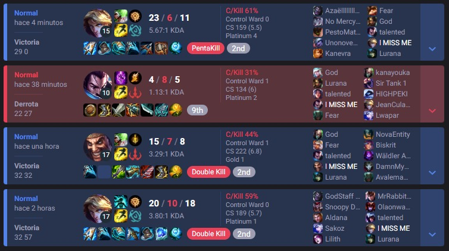

Who are we?
We are a group of friends who have been playing League of Legends for a long time, we have been playing for 3 years now but we started in the job of eloboosting one year ago when we realized that we were good enough to destroy the lower elos. We are a group of 5 people, we are all from Spain and we are all atleast diamond 1 in the soloq ladder. We are all very toxic and we are very good at the game.
We have another service related to mmr boosting in normal games, we can get your mmr to high master so you get at least emerald in placements. If needed we can also do the placements for you with your mains so you wont get asked if you got boosted.